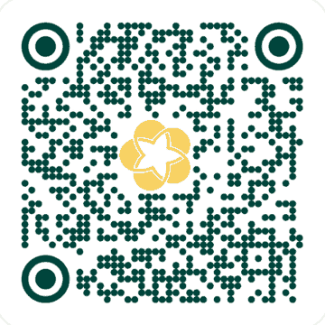

Chất quanh ta: sự đa dạng của chất, các thể và oxygen – không khí
Khoa học tự nhiên 6 · Chủ đề II · Bám sát bộ sách Kết nối tri thức với cuộc sống
1. Vật thể và chất
Mọi thứ quanh ta đều là vật thể. Vật thể tự nhiên có sẵn trong tự nhiên (cây, đá, nước sông); vật thể nhân tạo do con người làm ra (bàn, xe đạp). Vật hữu sinh có các đặc trưng sống; vật vô sinh thì không. Mỗi vật thể được tạo nên từ một hay nhiều chất. Ví dụ: chiếc cốc thủy tinh là vật thể, thủy tinh là chất.
2. Tính chất của chất
- Tính chất vật lí: thể, màu, mùi, vị, tính tan, nhiệt độ nóng chảy, nhiệt độ sôi, khối lượng riêng, tính dẫn điện, dẫn nhiệt. Khi thể hiện tính chất vật lí, chất không biến thành chất khác.
- Tính chất hóa học: khả năng bị phân hủy, bị đốt cháy, tác dụng với chất khác tạo thành chất mới. Dấu hiệu: đổi màu, sủi bọt khí, tạo kết tủa, tỏa nhiệt hoặc phát sáng.
3. Ba thể của chất và sự chuyển thể
| Thể | Hình dạng | Thể tích | Khả năng bị nén |
|---|---|---|---|
| Rắn | xác định | xác định | rất khó |
| Lỏng | theo bình chứa | xác định | khó |
| Khí | theo bình chứa | chiếm đầy bình | dễ |
Các quá trình chuyển thể: nóng chảy (rắn → lỏng), đông đặc (lỏng → rắn), bay hơi (lỏng → khí, xảy ra ở bề mặt chất lỏng ở mọi nhiệt độ), sôi (bay hơi xảy ra cả trong lòng chất lỏng, ở nhiệt độ sôi), ngưng tụ (khí → lỏng). Với một chất tinh khiết, trong khi nóng chảy hoặc sôi nhiệt độ không thay đổi. Ví dụ hạt sương đọng trên lá vào sáng sớm là do hơi nước ngưng tụ.
4. Oxygen
Ở điều kiện thường oxygen là chất khí không màu, không mùi, không vị, ít tan trong nước, nặng hơn không khí một chút. Oxygen duy trì sự sống (cần cho hô hấp) và duy trì sự cháy. Que đóm còn tàn đỏ sẽ bùng cháy trong bình oxygen. Ứng dụng: bình thở cho thợ lặn, bệnh nhân, đèn xì hàn cắt kim loại.
5. Không khí và bảo vệ không khí
Không khí là hỗn hợp khí, theo thể tích gồm khoảng 78% nitrogen, 21% oxygen, 1% còn lại là carbon dioxide, hơi nước, khí hiếm... Nguồn gây ô nhiễm: khí thải phương tiện giao thông và nhà máy, đốt rác, cháy rừng, núi lửa. Hậu quả: bệnh hô hấp, mưa acid, hiệu ứng nhà kính. Biện pháp: trồng cây xanh, dùng phương tiện công cộng, xử lí khí thải, dùng năng lượng sạch.
Lỗi hay gặp: nhầm "bay hơi" với "sôi"; cho rằng oxygen tự cháy được (thực ra oxygen chỉ duy trì sự cháy, không phải chất cháy).
6. Tự kiểm tra
- "Đường tan trong nước" là tính chất vật lí hay hóa học? (Đáp án: vật lí)
- Khí nào chiếm tỉ lệ thể tích lớn nhất trong không khí? (Đáp án: nitrogen, khoảng 78%)
- Nước đá tan thành nước là quá trình gì? (Đáp án: nóng chảy)
Nội dung chỉ mang tính ôn tập, hãy luôn đối chiếu với sách giáo khoa và bài giảng của thầy cô. Chuyển chủ đề: ← Mở đầu và các phép đo · Vật liệu, nhiên liệu, lương thực → · Tất cả chủ đề lớp 6
Chia sẻ và ủng hộ
Thấy bài viết hữu ích? Hãy gửi link cho bạn bè, học sinh hoặc đồng nghiệp: Facebook
Đấu trường KHTN và Thí nghiệm ảo 3D KHTN được thầy Lê Đình Dũng xây dựng và duy trì miễn phí. Nếu muốn, thầy cô và phụ huynh có thể ủng hộ một ly cà phê để trang có thêm nhiều bài học mới.

BIDV – Ngân hàng TMCP Đầu tư và Phát triển Việt Nam
Số tài khoản: 8821672343
Quét mã bằng ứng dụng ngân hàng bất kì. Nội dung gợi ý: “Ung ho Dau truong KHTN”.